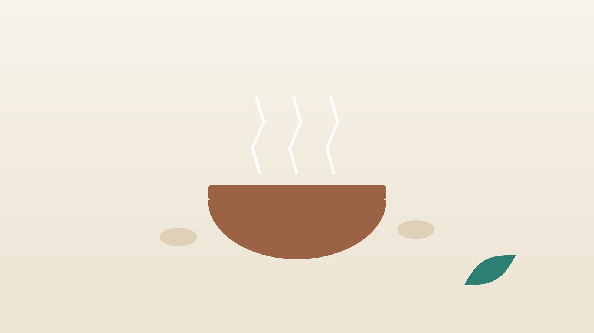

건강 칼럼 · 인천 보약 한의원
기운이 없고 쉽게 지친다면, 보약이 필요한 몸과 한방 관리

나의 피로, 단순한 피곤함일까요?
- 7시간 넘게 자도 아침에 개운하지 않다
- 피로가 6개월 넘게 이어지고 있다
- 조금만 무리해도 다음 날 몸살처럼 앓는다
- 집중이 안 되고 단어가 잘 떠오르지 않는다
- 오후만 되면 졸음이 쏟아지고 식후에 특히 처진다
- 좋아하던 일에도 흥미가 줄었다
이 체크리스트는 진단 도구가 아니라 상담이 필요한지 가늠해 보는 참고용입니다.
만성피로와 만성피로증후군은 어떻게 다른가요?
피로가 1개월 이상이면 지속성 피로, 6개월 이상이면 만성피로라고 부릅니다. 만성피로는 증상의 이름일 뿐이어서, 먼저 원인 질환을 찾는 것이 순서입니다. 흔히 확인하는 것은 다음과 같습니다.
- 갑상선기능저하증: 추위를 타고 붓고 체중이 늘면서 피곤하다면 TSH 검사로 확인합니다.
- 빈혈: 특히 생리량이 많은 여성은 철결핍 빈혈이 흔한 피로의 원인입니다.
- 당뇨병: 갈증, 잦은 소변, 이유 없는 체중 감소와 함께 오는 피로는 혈당 검사가 필요합니다.
- 수면무호흡증: 코를 심하게 골고 자다가 숨이 멎는다는 말을 들었다면 수면다원검사를 받아 보세요.
- 우울증: 의욕 저하와 흥미 상실이 2주 이상이면 피로보다 우울이 중심일 수 있습니다.
이런 원인이 없는데도 피로가 이어질 때 만성피로증후군(근육통성 뇌척수염, ME/CFS)을 생각합니다. 2015년 미국 국립의학원(IOM) 보고서는 6개월 이상 일상 활동이 크게 줄 만큼의 피로, 활동 후 증상 악화(post-exertional malaise), 자고 나도 개운하지 않은 잠을 필수로 보고, 여기에 인지 기능 저하나 일어설 때 어지럽고 힘든 기립 불내성 중 하나가 더해질 때 진단할 수 있다고 제시했습니다. 영국 국립보건임상연구원(NICE)의 2021년 지침은 ME/CFS 환자에게 운동량을 정해진 대로 늘려 가는 방식을 권하지 않고, 자기 에너지 범위 안에서 활동을 나누는 페이싱을 강조합니다.
피로 뒤에 숨은 질환을 의심할 신호
- 의도하지 않았는데 몇 달 사이 체중이 눈에 띄게 줄었다
- 열이 반복되거나 밤에 옷이 젖을 만큼 땀이 난다
- 목, 겨드랑이, 사타구니에 멍울이 만져진다
- 숨이 차고 가슴이 두근거리며 다리가 붓는다
- 혈변이나 검은 변, 지속적인 복통이 있다
- 죽고 싶다는 생각이 든다
이런 신호는 감염, 종양, 심장 질환, 위장관 출혈 등의 가능성이 있어 내과 진료가 먼저입니다. 마지막 경우에는 자살예방 상담전화 109로 바로 연락하세요.
한의학은 오래된 피로를 어떻게 보나요?
한의학에서는 쉬어도 풀리지 않는 피로와 쇠약을 허로(虛勞)라 했고, 『동의보감』은 잡병편에 허로를 따로 두어 기운이 상한 것, 혈이 상한 것, 오장 가운데 어디가 상했는지에 따라 처방을 나누었습니다. 피곤한 것을 하나의 증상으로 뭉뚱그리지 않고, 무엇이 비어 있는지 따져 채우는 방식입니다.
다만 피로가 모두 '부족'에서 오는 것은 아닙니다. 기름진 음식과 단 음식으로 소화기가 지쳐 담습(痰濕)이 쌓이면 몸이 물먹은 솜처럼 무겁고, 스트레스로 간기(肝氣)가 막히면 몸보다 마음이 먼저 지칩니다. 이런 분이 무작정 보약을 드시면 더 답답해질 수 있어, 채울 피로와 덜어 낼 피로를 구분하는 것이 한의학 진료의 핵심입니다.
나의 피로는 어떤 유형일까?
1. 비기허(脾氣虛) 기운이 새는 유형
- 이런 분에게 많아요
- 식사가 불규칙하고 과로가 잦은 분
- 나타나는 모습
- 말하기도 귀찮고 식후에 늘어지며 오후에 바닥난다
- 함께 오는 몸의 신호
- 식욕 저하, 묽은 변, 잦은 감기
- 진찰에서 보이는 모습
- 혀가 크고 가장자리에 잇자국, 맥이 약함
- 치료 방향
- 소화 기능을 세워 기운을 끌어올리는 방향 (보중익기탕 계열)
- 오늘부터 해 볼 것
- 아침을 거르지 말고 따뜻한 음식으로 시작하세요.
2. 기혈양허(氣血兩虛) 바닥까지 비운 유형
- 이런 분에게 많아요
- 출산, 수술, 큰 병 뒤에 회복이 더딘 분
- 나타나는 모습
- 어지럽고 숨이 차며 조금만 움직여도 지친다
- 함께 오는 몸의 신호
- 얼굴이 창백함, 가슴 두근거림, 잠이 얕음
- 진찰에서 보이는 모습
- 혀 색이 옅고 맥에 힘이 없음
- 치료 방향
- 기운과 혈을 함께 채우는 방향 (팔진탕·십전대보탕 계열)
- 오늘부터 해 볼 것
- 하루 일정 중 꼭 필요한 일 세 가지만 정하세요.
3. 담습(痰濕) 무거워서 처지는 유형
- 이런 분에게 많아요
- 체중이 늘고 야식이나 음주가 잦은 분
- 나타나는 모습
- 몸이 무겁고 머리가 멍하며 아침에 특히 일어나기 힘들다
- 함께 오는 몸의 신호
- 코골이, 가래, 식후 졸림, 붓기
- 진찰에서 보이는 모습
- 설태가 두껍고 끈적함, 맥이 미끄러움
- 치료 방향
- 습을 말리고 소화기를 가볍게 하는 방향 (이진탕·평위산 계열)
- 오늘부터 해 볼 것
- 저녁은 잠들기 3시간 전에 마치고 단 음료를 줄이세요.
4. 간기울결(肝氣鬱結) 마음이 먼저 지친 유형
- 이런 분에게 많아요
- 업무 압박과 감정 소모가 큰 분
- 나타나는 모습
- 쉬어도 피곤하고 짜증이 늘며 기분에 따라 피로가 오르내린다
- 함께 오는 몸의 신호
- 가슴 답답함, 한숨, 옆구리 결림, 잠들기 어려움
- 진찰에서 보이는 모습
- 맥이 팽팽하고 혀 가장자리가 붉음
- 치료 방향
- 막힌 기운을 풀어 긴장을 내리는 방향 (소요산 계열)
- 오늘부터 해 볼 것
- 하루 20분은 휴대폰 없이 걷는 시간을 만드세요.
한의원에서는 어떻게 진찰하나요?
- 검사 결과 확인: 혈색소, 갑상선, 혈당, 간·신장 기능 등 최근 혈액검사 결과를 함께 봅니다.
- 피로 양상: 피로가 시작된 시점, 하루 중 가장 힘든 시간, 활동 후 악화 여부를 여쭙니다.
- 수면과 기분: 잠의 질, 코골이, 우울감과 흥미 저하를 짧은 설문으로 확인합니다.
- 설진·맥진: 비어 있는 피로인지, 막혀 있는 피로인지를 판단합니다.
침·약침·한약 치료는 어떻게 하나요?
1. 침 치료
- 족삼리(足三里): 무릎 아래 정강이뼈 바깥쪽. 소화와 기운을 돕는 대표 혈입니다.
- 기해(氣海): 배꼽 아래 약 두 손가락 너비. 기운의 바다라는 이름처럼 원기를 보충할 때 씁니다.
- 백회(百會): 정수리 한가운데. 머리가 멍하고 처질 때 맑게 하는 데 씁니다.
- 비수(脾俞)·신수(腎俞): 등 아래쪽 척추 양옆. 소화 기능과 체력의 바탕을 돕습니다.
만성피로와 만성피로증후군에 대한 침 연구는 대부분 규모가 작고 방법이 제각각이라 효과를 단정하기 어렵습니다. 그래서 피로 점수와 활동량을 기록하며 실제 변화를 함께 확인합니다.
2. 약침
뭉친 목과 어깨, 등의 관련 경혈에 약침을 적용해 피로와 함께 오는 근육통과 결림을 줄입니다.
3. 한약
유형에 따라 채우는 처방과 덜어 내는 처방을 나누어 씁니다. 활동 후 악화가 뚜렷한 분은 치료 초기에 활동량을 늘리기보다 회복을 먼저 돕습니다. 당뇨약, 갑상선약, 항우울제를 드시고 계시면 처방 전에 꼭 알려 주세요. 한약은 원장이 원내 탕전실에서 약재 선별부터 달이는 과정까지 직접 관리하며, 10일분씩 처방해 복용 경과를 보고 약재 구성과 양을 조절합니다.
원장님이 네이버 블로그에 진료 이야기와 건강 정보를 꾸준히 올리고 있습니다. 더 많은 이야기는 블로그에서 확인해 보세요.
블로그 보기치료는 어떤 순서로 진행되나요?
- 원인 확인 혈액검사와 수면 상태, 기분 상태를 점검합니다.
- 첫 한방 진료 유형을 정하고 피로 일지(시간대별 에너지 점수)를 안내합니다.
- 4~8주 주 1~2회 침과 약침, 한약으로 회복력을 끌어올립니다.
- 활동 넓히기 피로 점수가 안정되면 활동량을 조금씩 늘려 봅니다.
피로는 좋아졌다 나빠지기를 반복하기 쉬워, 기간과 횟수는 진찰 후 개인별로 안내합니다.
에너지를 아껴 쓰는 생활 관리
- 페이싱: 하루 할 일을 잘게 나누고, 힘이 남은 듯할 때 멈추는 연습을 합니다.
- 기상 시간 고정: 주말에도 일어나는 시간을 한 시간 이상 바꾸지 않습니다.
- 카페인과 술: 오후 커피와 잠들기 전 음주는 잠을 얕게 해 다음 날 피로를 키웁니다.
- 단백질과 철분: 살코기, 달걀, 콩, 녹색 채소를 챙기고 철분제는 검사 후 필요할 때 드세요.
- 햇빛 걷기: 오전에 10~20분 햇빛을 쬐며 걸으면 생체 리듬을 맞추는 데 도움이 됩니다.
다른 진료가 함께 필요한 경우
- 혈액검사를 받은 지 1년이 넘었다면 내과 검진부터 받으세요.
- 코골이와 숨 멈춤이 있다면 수면클리닉에서 수면다원검사를 받으세요.
- 우울감과 흥미 저하가 2주 넘게 이어지면 정신건강의학과 상담을 함께 받으세요.
- ME/CFS가 의심되면 내과나 재활의학과에서 다른 질환을 배제하는 평가를 받으세요.
자주 묻는 질문 Q&A
- Q1. 검사에서 이상이 없는데 왜 이렇게 피곤할까요?
- 수면의 질, 스트레스, 생활 리듬 같은 요인이 겹친 경우가 많고, 한의학적으로 유형을 나누어 살펴볼 수 있습니다.
- Q2. 보약을 먹으면 피로가 풀리나요?
- 비어 있는 피로에는 도움이 될 수 있지만, 담습이나 막힌 기운으로 오는 피로에는 오히려 답답해질 수 있어 진찰이 필요합니다.
- Q3. 운동을 하면 좋아진다는데 하고 나면 더 힘들어요.
- 활동 후 악화가 있다면 ME/CFS 가능성도 있어, 운동량을 무리하게 늘리지 말고 상담을 받으세요.
- Q4. 영양제를 여러 개 먹고 있어요.
- 드시는 제품을 가져오시면 한약과 겹치거나 불필요한 것이 있는지 함께 봅니다.
- Q5. 낮잠을 자도 되나요?
- 오후 3시 전 20~30분 정도는 괜찮지만, 길게 자면 밤잠을 방해할 수 있습니다.
- Q6. 간 수치가 높은데 한약을 먹어도 되나요?
- 간 기능 상태를 확인하고 처방을 조절하며, 필요하면 복용 중 혈액검사로 확인합니다.
- Q7. 만성피로증후군도 한방 치료를 받을 수 있나요?
- 진단과 평가는 의과에서 받으시고, 수면과 통증, 소화 같은 동반 증상을 돕는 보조 관리로 받을 수 있습니다.
- Q8. 치료는 얼마나 받아야 하나요?
- 보통 4~8주 동안 피로 일지를 보며 경과를 판단합니다.
문원열 대표원장한의사 · 365스마일한의원
임상 경력 15년, 인천 서구 가정동에서 개원 후 10년째 진료하고 있으며, FCST 턱관절학회·연부조직학회·침도학회 등에서 활동합니다. 아픈 곳만이 아니라 증상의 원인을 찾아 진료합니다.
진료 안내
- 진료시간
- 평일 09:00~20:00 (점심시간 13:00~14:00, 접수 마감 19:30)
토·일·공휴일 09:00~15:00 (접수 마감 14:30) - 주소
- 인천광역시 서구 가경주로 46, 2층 (가정동)
인천2호선 가정중앙시장역 인근
영상으로 길 안내 보기 → - 주차
- 한의원 건물 바로 앞 1층 도원주차장
- 예약
- 예약 바로가기 또는 전화 예약
진료시간은 사정에 따라 바뀔 수 있으니 방문 전 전화로 확인해 주세요.
함께 읽으면 좋은 칼럼
건강 칼럼 전체 보기 →

참고 자료
- Institute of Medicine. Beyond Myalgic Encephalomyelitis/Chronic Fatigue Syndrome: Redefining an Illness. National Academies Press, 2015
- NICE guideline NG206. Myalgic encephalomyelitis (or encephalopathy)/chronic fatigue syndrome: diagnosis and management, 2021 — 원문
- 『동의보감(東醫寶鑑)』 잡병편 허로(虛勞)
- 질병관리청 국가건강정보포털 — 원문
※ 이 글은 일반적인 건강 정보이며, 개인의 상태에 따라 치료 방법과 결과는 다를 수 있습니다. 정확한 진단과 치료는 진료를 통해 결정됩니다. 침·약침 시술 후 드물게 멍, 통증 등이 생길 수 있습니다.